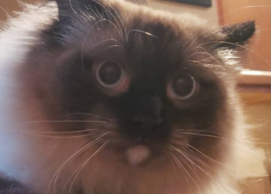

"Any sufficiently advanced technology is indistinguishable from magic."
- Arthur C. Clarke
Introduction
Hello, and welcome to my personal website. My name is Logan, and I am a proud graduate of Montana State University, with a BS degree in Computer Science. Solving problems creatively using software is my passion, and I hope one day to be a confident and efficient software developer. I strive to constantly be learning, and yearn to add more tools to my disposal. We live in a constantly changing world, and use technology only dreamed of in science fiction mere decades ago.
On this home page, you can find a personal summary of myself. Along the top of this page you can find a navigation bar with links to a digital version of my resumé, a small portfolio highlighting work I am personally proud of, as well as some external links to my Github and my Linkedin. I am always open to opportunities to expand my skillset, so please feel free to reach out. Do NOT contact me with unsolicited services or offers.
Personal Summary
I was born and raised in Billings, Montana, and graduated from Billings West High School in the year of 2016. At first, having a strong passion for playing video games in my free time, I naturally assumed that a video game designer was the career for me. After some research and reading several anecdotes concerning work conditions, I decided I was not the man for the job. However, I was still left with a burning passion for technology, and after I participated in an intro programming course my junior year, the seed had been planted. I enrolled in MSU, hearing good things about their computer science program, and graduated with my degree. Along the way I had the pleasure of spending a summer internship at Figure Technologies, a local tech company leveraging blockchain and automation in the home mortgage market. I consider the experience to be one of my most invaluable during my college career, and was introduced to core concepts used in industry such as version control and frontend development.
Aside from work-related activities, I am an avid outdoor and nature lover. Going on a hike, camping, disc golf, and rock climbing are some of my favorite excuses to get outside. When the season permits it, I like to go hunting for water fowl, and attempting to cook the meat (I'm not very good at it). When it comes to being indoors, I enjoy listening to music and playing my guitar, as well as reading. My cat Quantanamo is a constant source of inspiration for me, and also a constant pain in my rear. The fluffy lad who is so good at acting like he didn't get fed that I had to make an android application to keep track of him. 